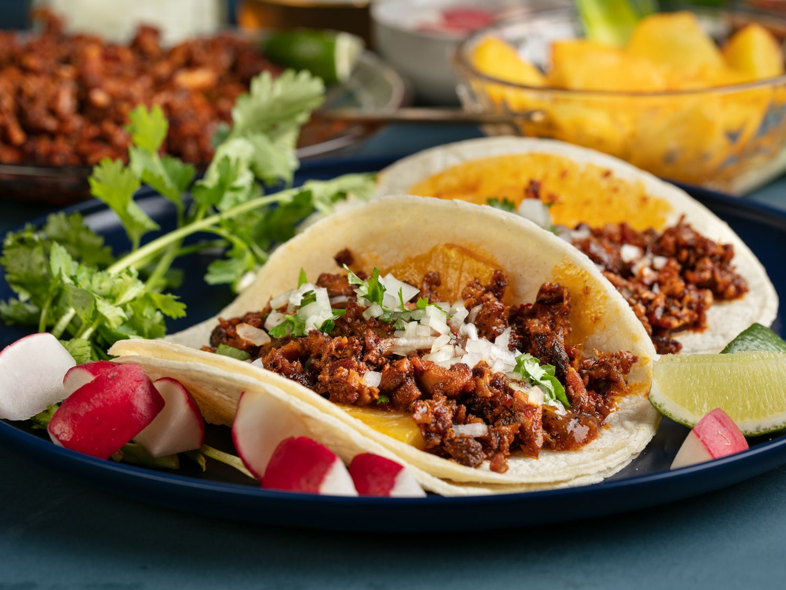

Taco Recipe

Easy to make tacos for Taco Tuesdays!
Ingrediants
- Street Taco tortillas
- Salsa
- Salt and Pepper
- 1 lb. ground beef
- Stem of Cilantro
- 2 Limes
Instructions
- Cook the ground beef in a pot. Season with salt and pepper
- Once beef has been cooked through, start warming up the tortillas on a griddle
- Assemble the tacos on a plate. Place meat on tortillas, pour some of the premade salsa on top with cilantro
- Cut up the limes into wedges and place a few on the plate